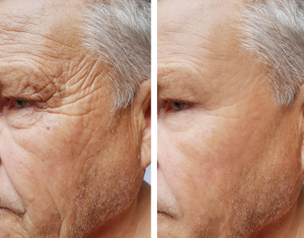
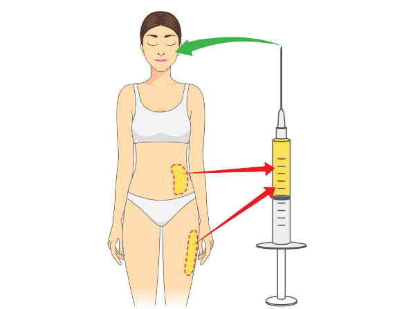
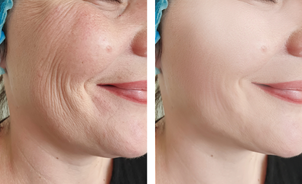

Micro Injerto Adiposo
Rejuvenecimiento Facial con rellenos PropiosQué son los micro-injertos de tejido adiposo?
Los injertos autólogos o propios de la persona, han revolucionado la estética corporal, especialmente la estética facial.
El tejido adiposo no solo es un excelente relleno, sino que mejora la calidad de la piel.
Se está ha demostrado que no solo tiene propiedades de relleno para las arrugas de la piel, en sí mismo, sino que tiene también potencial regenerativo para los tejidos donde se inyecta, debido a la presencia de células madre en el tejido adiposo.
Se ha estudiado que las células madre derivadas del tejido adiposo tienen una gran capacidad de remodelar, pero sobre todo de regenerar la piel y los tejidos blandos. Se cree que su capacidad de transformar los tejidos se debe a la liberación de múltiples mediadores como citoquinas y factores de crecimiento que mejoran la textura y calidad de la piel.
El tejido adiposo, podría considerarse el relleno ideal porque está fácilmente disponible y obtenible, la obtención del mismo tiene bajos efectos colaterales o complicaciones en el sitio donante, puede repetirse la técnica cuantas veces sea necesaria, se pueden obtener grandes cantidades de relleno a costo cero para tratar áreas extensas, y finalmente, por provenir del mismo paciente, el tejido adiposo es un producto completamente biocompatible, sin reacciones alérgicas o de incompatiblidad.
La única desventaja relativa de este procedimiento es que no se puede, ni se debe, realizar en un consultorio como los rellenos comerciales, ejemplo el ácido hialurónico. Si bien puede considerarse de alguna manera un procedimiento de rejuvenecimiento "sin cirugía" o "mínimamente invasivo", es un procedimiento que es un peldaño por encima de los procedimientos "sin cirugía" que se realizan en consultorios y éste debe realizarse en el ámbito de una sala de cirugía con la asepsia óptima e inclusive puede requerirse la presencia de un anestesista.
Este procedimientos logra una franca mejoría y rejuvenecimiento de la piel en las áreas que presentan cualquier grado de envejecimiento o perdida del volumen, como la cara, aunque también se puede aplicar en cualquier sitio del cuerpo.
Como es la técnica para realizar micro-injertos de tejido adiposo autólogo?
La técnica para realizar microinjertos de tejido adiposo propio del paciente consta básicamente de tres etapas:
1) Se toma de tejido adiposo del propio paciente mediante lipoaspiración delicada, en un sitio donante adecuado como el abdomen o los muslos,
2) Se procesa el tejido adiposo aspirado mediante lavado y decantado (preferimos no centrifugar para evitar lesionar las células) y
3) Finalmente se inyecta cuidadosamente el tejido adiposo, mediante finas cánulas, en el tejido subcutáneo, debajo de las arrugas, en las áreas de envejecimiento facial o en otras regiones del cuerpo para lograr también recuperar el volumen.
El concepto de micro-injerto es la piedra angular del procedimiento ya que el secreto es inyectar pequeñas cantidades, en diferentes planos para que el material inyectado tenga la mayor tasa que se vascularización y permanezca en ese lugar.
Características del procedimiento
Como dijimos, este procedimiento lo realizamos en sala de cirugía ya que es recomendable mantener excelentes normas de asepsia, en el contexto de un centro con todos los elementos de bioseguridad. No recomendamos realizar jamás este procedimiento en un consultorio convencional.
Se puede realizar bajo anestesia local sola cuando las áreas son pequeñas. En caso opcional se puede realizar con sedación según la preferencia del paciente. Si se requiere realizar un tratamiento muy extenso es recomendable realizar una anestesia general para mayor confort del paciente.
Postoperatorio y recuperación
En el postoperatorio puede existir cierto grado de edema o inflamación. Se debe restringir la movilidad de los sectores injertados. El dolor o las molestias en general son leves, son más marcadas durante los primeros 2 a 3 días y calman con analgésicos comunes. Esa restricción relativa dura solo 2 semanas. Los moretones o equimosis también pueden aparecer y demoran hasta 4 semanas en reabsorberse.
Las cicatrices son imperceptibles y los resultados en cuanto al rejuvenecimiento de la piel son excelentes.
La duración de dichas mejoras es variable de acuerdo a la persona y sushábitos como realizar dietas no balanceadas, fumar, etc, pero habitualmente el efecto rejuvenecedor puede perdurar habitualmente por más de un año y en algunos pacientes por varios años.